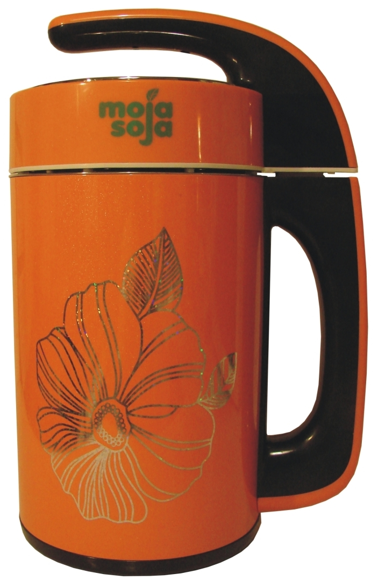
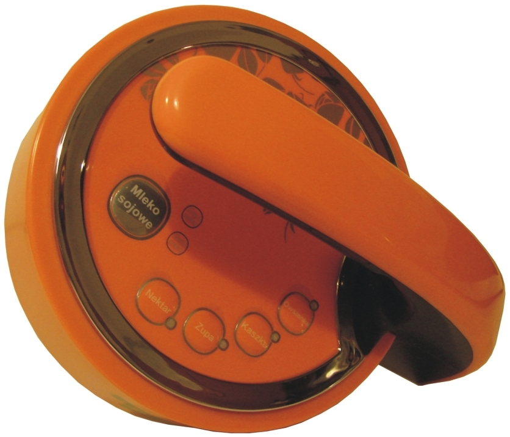
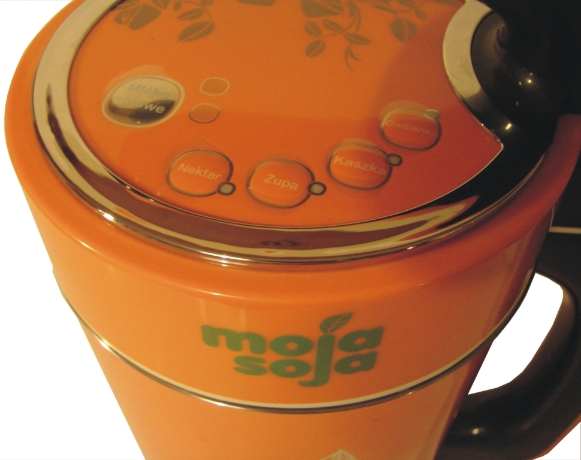
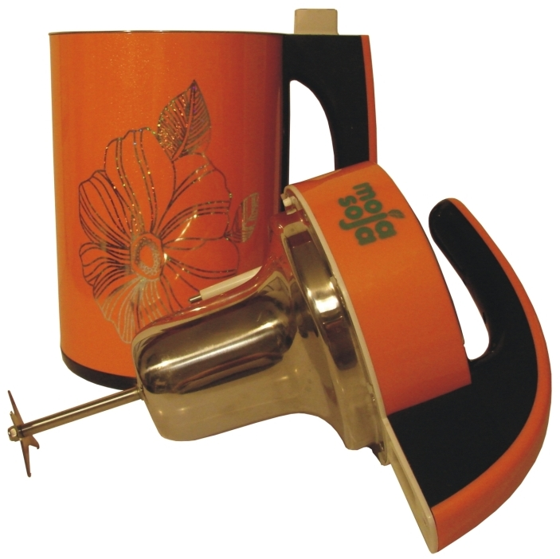
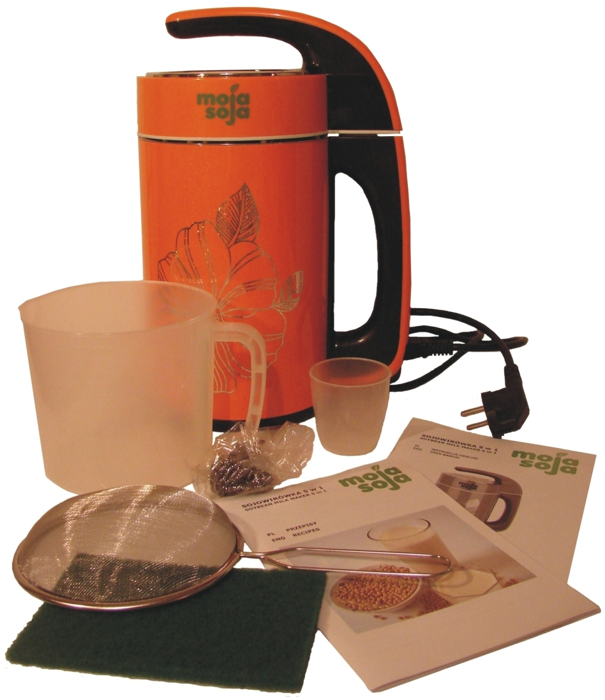
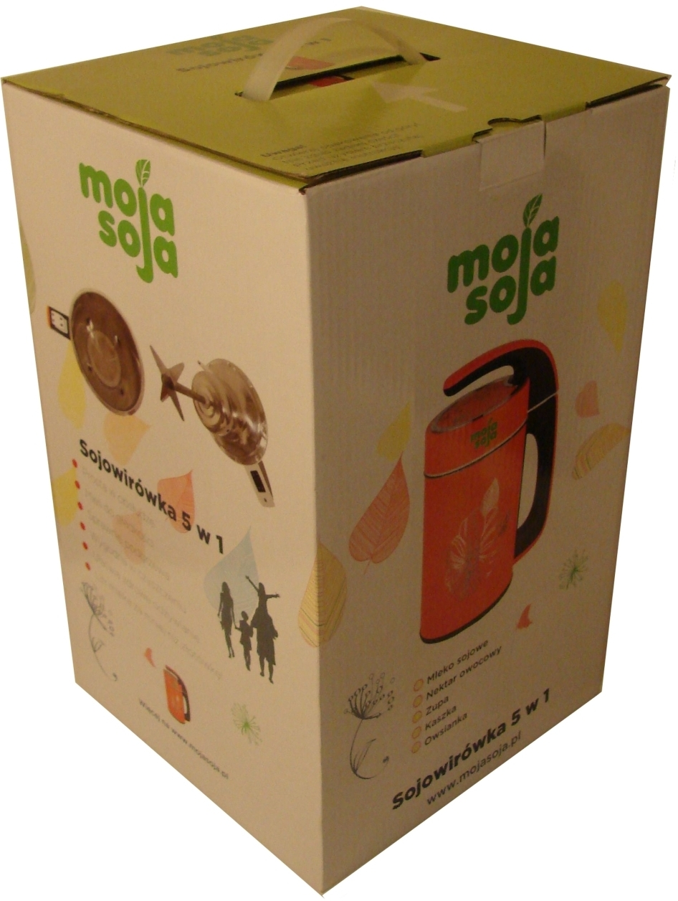

Pragniemy zaprezentowaæ Sojowirówkê 5 w 1 firmy MOJA SOJA, czyli innowacyjny sposób na proste i tanie zdrowe od¿ywianie! Sojowirówka to idealny pomys³ na ¶wi±teczny upominek dla Ciebie i Twoich bliskich.

Sojowirówka MOJA SOJA to wymarzony prezent ¶wi±teczny dla:
osób praktykuj±cych zdrowe od¿ywianie,
rodziców z ma³ymi dzieæmi,
wegan i wegetarian,
alergików i nietolerantów laktozy,
sportowców i osób na diecie.

Sojowirówka MOJA SOJA posiada 5 po¿ytecznych funkcji:
MLEKO SOJOWE z ziarna suchego lub namoczonego, migda³owe, arachidowe, sezamowe, zbo¿owe, kokosowe, wieloziarniste i inne rodzaje mlek ro¶linnych (30 minut),
NEKTAR, smoothie ze ¶wie¿ych owoców (30 sekund),
ZUPA krem z drobno zmielonych warzyw (25 minut),
KASZKA dla dzieci (30 minut),
OWSIANKA z pe³nych ziaren zbó¿ (30 minut).

Sojowirówka MOJA SOJA dysponuje:
moc± 800 W (podgrzewacz) + 200 W (blender),
certyfikatem zgodno¶ci CE,
termostatem i czujnikiem przelewowym,
komor± z dwuwarstwowej, b³yszcz±cej stali nierdzewnej,
mi³± dla oka, s³oneczn± kolorystyk±,
hologramowymi ozdobnikami w stylu vintage.

Wraz z Sojowirówk± MOJA SOJA dostaniesz akcesoria:
miarkê do odmierzania ilo¶ci ziarna, nasion, orzechów,
dzbanek do odmierzania ilo¶ci wody (1,1 l - 1,3 l),
sitko do odcedzania mleka,
myjkê i druciak,
instrukcjê obs³ugi w jêzyku polskim i angielskim,
ksi±¿kê kucharsk± w jêzyku polskim i angielskim,
suplement do instrukcji w jêzyku polskim i angielskim,
kartê serwisow± z dwuletni± gwarancj± na Sojowirówkê,

Jak dzia³a Sojowirówka MOJA SOJA?
Po wsypaniu miarki ziarna (ok. 85 g), dolaniu wody (1,3 l) oraz ewentualnie przypraw, zawarto¶æ jest podgrzewana przy pomocy grza³ki w podstawie komory Sojowirówki.
Ziarno pêcznieje, miêknie. Nastêpnie Sojowirówka uruchamia swój nó¿ (blender). Ziarno jest naprzemiennie podgrzewane i miksowane.
Niestrawialne sk³adniki soi zostaj± wygotowane, a mleko oddziela siê od sk³adników sta³ych, mo¿na wtedy poczuæ intensywny zapach ¶wie¿ego mleka ro¶linnego.
Po 30 minutach urz±dzenie sygnalizuje koniec pracy. Po od³±czeniu Sojowirówki od zasilania, gotowe mleko przelewamy przez sitko do pojemnika
Okara, czyli papka zatrzymana przez sitko mo¿e byæ u¿yta do przygotowania nale¶ników, kotletów, pasztetu, pieczenia ciasteczek. Nic siê nie marnuje.
Zobacz jak dzia³a Sojowirówka:
Jak czy¶ciæ Sojowirówkê MOJA SOJA?
Komora Sojowirówki oraz nó¿ i bêben silnika s± nies³ychanie ³atwe w czyszczeniu. Nie maj± k³opotliwych zakamarków i skomplikowanego kszta³tu. Przy u¿yciu wody i wilgotnej g±bki-myjki dostarczonej wraz z urz±dzeniem, zabrudzeñ pozbêdziesz siê w kilkana¶cie sekund.
Ile pieniêdzy zaoszczêdzê dziêki Sojowirówce MOJA SOJA?
Koszt wytworzenia jednego litra mleka ro¶linnego to mniej ni¿ 1 z³oty! Zapomnij o wydawaniu fortuny na mleko ro¶linne w kartonach. Stwórz swoje w³asne mleko bez konserwantów i substancji s³odz±cych. Prosto, szybko, oszczêdnie. Koszt pr±du potrzebnego do wytworzenia litra mleka sojowego to od 10 do 15 groszy, w zale¿no¶ci od operatora i sprzedawcy energii elektrycznej. Koszt jednej miarki ziarna soi potrzebnego do wytworzenia 1 litra mleka sojowego to od 50 do 80 gr, o ile nie kupujemy drogiego ziarna soi z wystaw delikatesowych.

Serdecznie zapraszamy do zakupu!
Dostawy realizujemy b³yskawicznie, sprzêt wysy³amy o poranku w najbli¿szym dniu roboczym Paczk±24 Poczty Polskiej lub przez Paczkomaty InPost. W granicach aglomeracji ³ódzkiej realizujemy szybkie dostawy bezpo¶rednio do domu. Mo¿liwy jest równie¿ odbiór osobisty w siedzibie naszej firmy, po uprzednim ustaleniu czasu odbioru. Jeste¶my elastyczni i kontaktowi, bardzo zale¿y nam na Pañstwa wygodzie i satysfakcji!
Wszelkie ustalenia odno¶nie odbioru osobistego oraz pytania dotycz±ce Sojowirówki prosimy kierowaæ pod numer telefonu --- --- ---, pod adres sklep@mojasoja.pl lub za po¶rednictwem formularza Allegro.